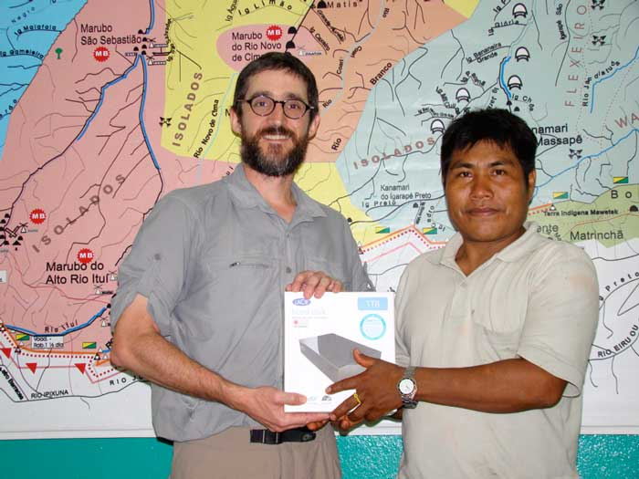

DIGITAL PRESERVATION OF SPECIALIZED INDIGENOUS LANGUAGE REGISTERS
My largest ongoing project is to design and create a digital repository for Indigenous Amazonian cultural materials. This project is rooted in my background in anthropology and language documentation. I have conducted nearly two years of fieldwork in Amazonia. During these fieldwork episodes, I have made over 100 hours of audio recordings, over 25 hours of video recordings, hundreds of photographs, and textual materials including transcriptions and translations of Indigenous narratives. I now plan to make these materials available to the originating communities using an open source digital repository application.
During my first fieldwork, I used some analog processes, including film photography, to document Indigenous language and culture. Afterwards, I digitized all the analog media, moved the digital files to a hard drive, and returned to the host community. I repatriated all collected audio, video, photographic, and textual materials, donating the hard drive to the host community.
The people I worked with are called the Marubo. They live in the Javari River basin, in Brazil, near the border with Peru. Marubo people have a rich corpus of sung traditional narratives called saiti. These narratives range from short songs about fifteen minutes long, to songs that take days or even weeks to complete. At the time of my fieldwork, these narratives were fully known only by a few ageing elders. In order to prevent the loss of this oral knowledge, after consulting with Marubo people, I carried out a language documentation project focused on the sung narratives.

With support from the Foundation for Endangered Languages and the German Foundation for Endangered Languages (Gesellschaft für bedrohte Sprachen, GBS), I spent six months in the Javari River. I worked with Marubo people to make 64 hours of audio recordings, including 47 sung narratives totalling 31 hours in length. In addition, we transcribed 15 narratives, digitized 43 typewritten and handwritten transcriptions, and translated 8 narratives.

I now plan to build a digital repository for all the Marubo cultural materials currently in my possession. The repository will make these materials accessible to the Marubo, and be capable of receiving new submissions as needed. I hope to create sound long-term preservation and access conditions for these materials, and eventually turn the repository over fully to Indigenous control.

DIGITAL MEDIA COLLECTIONS
The Digital Media Collections course at the iSchool was a project-based, studio-style exercise in designing a resource collection. We focused on conceptual aspects of design including understanding the purpose and audience of the collection, selecting resources, describing and organizing resources, and determining how to present resources to users. We implemented our ideas using the Open Video Digital Library Toolkit.
Our main class project was to create a prototype resource collection consisting of approximately 30 videos on the assigned subject of alternative medicine and wellness. We worked to select, describe, and organize the resources to make them appealing and useful to the intended audience. We worked on the information architecture of the digital library and the information design of individual web pages, concentrating on how design decisions can address both the rhetorical goals of the collection designer and the information needs of the target audience.
Our design process was divided into multiple phases:
- Preliminary reflections: making explicit our goals and assumptions for the project.
- User and subject area research: this included building a source library from which we selected collection resources.
- Creating personas and scenarios to imagine how potential audience members will interact with the collection.
- Creating a prototype collection showing how the envisioned experience takes form in a specific digital library environment. Developing a system of descriptive attributes and values for resource description and access. Making good use of the Open Video Digital Library Toolkit's built-in metadata and description fields to facilitate navigation, resource discovery, and the user experience.
- Analysis, critique, and refinement: putting the prototype through multiple design critiques and iterations.
In addition to our digital collection prototype, we wrote a design brief, which went through multiple revisions as the collection design advanced. Our brief described our communicative goals for the collection, our interpretation of the audience and its information needs, and our strategy for reflecting these goals and needs through the selection, organization, and description of collection resources and through the information design of the digital library environment.
In a final reflective essay, we examined the process of creating a collection experience. I especially focused on the complex negotiation of authorial and audience goals in collection design and on what concepts I had found most useful for creating an appealing and informative collection.
In addition to critiquing our own collection and our classmates', we analyzed an existing video library to describe how it works as an information experience, from the differing perspectives of audience, author, and information critic. The design critique was a recurring feature of the overall coursework and design process.
Archiving digital data from the Denise Schmandt-Besserat Collection
As a student in the course on Problems in Long-Term Retention of Electronic Records at the iSchool, I worked with a group to safely extract files from a collection of 76 3.5-inch floppy disks, part of the Denise Schmandt-Besserat Papers at the Dolph Briscoe Center for American History. We created disk images, extracted files from the disk images, created descriptive metadata for each disk image and file, and ingested the files and metadata into the iSchool's DSpace repository. We interviewed the records' creator, Denise Schmandt-Besserat to better understand and contextualize the materials.
We used the equipment in the iSchool's Digital Archaeology Lab, together with procedures developed by prior students in the Problems class, to mount the disks safely using a computer running the Ubuntu operating system. We used the UNIX hash command to generate checksums of the original physical disk in order to verify the precision of subsequent copies. We created disk images using the UNIX disk dump command. We then extracted the individual files from working copies of the disk images. We created xml metadata files for all extracted files as well as for the disk images.
At the same time as we processed the disks, we examined the Schmandt-Besserat Papers at the Briscoe Center and interviewed Denise Schmandt-Besserat twice. Once we understood Schmandt-Besserat's work as well as the contents of the disks, we decided on an arrangement for the digital records that replicated the arrangement of files on the original media. We documented each disk photographically. We created a structure in DSpace to represent the disks and receive the extracted disk images and files. We then bundled together the extracted files, metadata files, and text files documenting our UNIX commands, in a single directory structure. Working with the iSchool Content and Communications Strategist, we ingested the contents of this directory structure into the iSchool DSpace repository.
In addition to the disk images and extracted files, our work yielded a biographical sketch, scope and content notes, a file inventory, a recording of our oral history interview with the records creator together with a time and subject index for the interview, and our project final report. These materials were formerly hosted by the iSchool as the in its DSpace repository as the Denise Schmandt-Besserat Papers community. Their current status is not known.